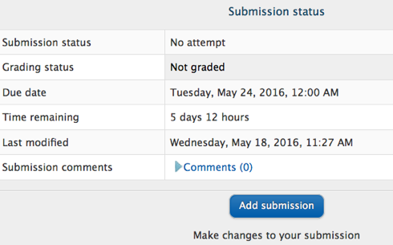
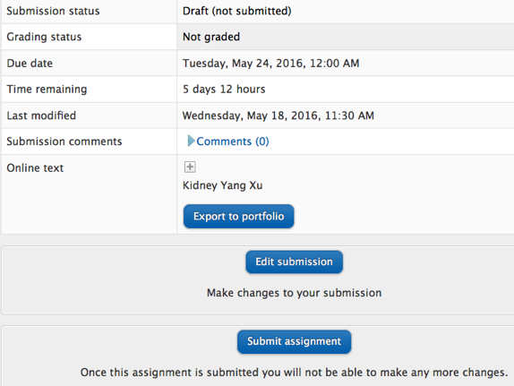
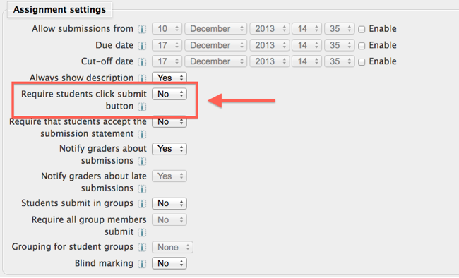
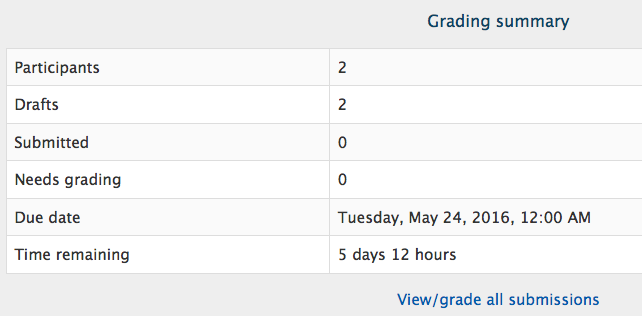
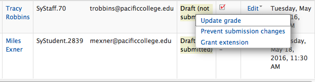
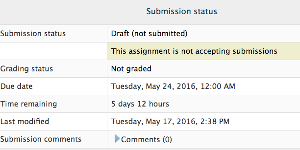

When a student submits an assignment, it can be
given a status of "Draft (not submitted)" or "Submitted for Grading." The
purpose of this is to allow students to submit a "draft" to the instructor for
marking or review, before they submit their final draft for grading.
This
tutorial will describe how and where to adjust these settings based on what you
want your students to do to turn in assignments.
This
setting is for individual assignments only; unfortunately, there is no global
assignment setting that will adjust all of your course assignments with one
click. What this means is that you will need to go into each assignment
settings page to make the desired adjustments.
For more detailed information on the different types of submission options click here.
1. The default setting for most online file submission assignments:
Most file upload assignments require a two-step
process to submit a paper for grading:
1. The student clicks the [Add Submission] button, uploads their assignment and
the paper is automatically given a status of "Draft, not submitted."

- - > A. This status allows an instructor to review the draft, make
recommendations and get back to the student. The student can then make
adjustments based on the instructor comments and resubmit a final draft for
grading, before the designated assignment due date.
2. To submit the draft for final grading, the student must click the [Submit
Assignment] button. This will change the status to "Submitted for
grading."

- - > A. Once the paper has been "Submitted for grading" the
student can no longer make any adjustments or resubmit a paper, regardless of
the assignment due date.
NOTE: If the assignment due date passes and the student only has a draft
uploaded and never submitted the paper for grading (i.e. performed step 1, but
not step 2), the instructor CAN view/download and grade the draft. However, the
student will still have access to submit another paper through the assignment
page, but the date stamp of the submission will make it easy to identify if the
paper was submitted after the due date or after the draft had been graded. The
instructor can manually change the status to no longer accept student
submissions (see step #3 below) if the student does not submit a final draft
for grading (i.e. perform step 2 before the due date).
2. To turn the default setting on or off:
You can set this option to YES or NO.
Turn editing on, select the yellow pencil icon next to the assignment you wish
to adjust to open the Assignment Settings page.
In the Assignment Settings section, locate the item "Require students
click submit button" and select either YES or NO (see image to the right).
YES = After a student submits a file, the assignment page will show a status of
"Draft (not submitted)." Two buttons will display at the bottom of the
assignment page: [Edit my submission] and [Submit Assignment]. Students must
click [Submit Assignment] to change the status from "Draft, not
submitted" to "Submitted for grading."
NO = After a student submits a file, the assignment page will immediately show
a status of ÒSubmitted for grading,Ó however, there will also be an [Edit my
submission] button which will allow students to resubmit an updated file up to
the assignment due date.

3. To prevent further submissions after the due date:
If the Assignment Settings from step #2 are set
to YES, the instructor may prevent further submissions from the student after
the due date.
1. Open the Assignment page, then select the [View/grade all submissions] link,
to open the assignment grading page.

2. For students who show the assignment status of "Draft, not
submitted," locate the "Edit" column, hover over the icon, and
choose "Prevent Submission Changes" (box #1 in the image to the
right) This will change the status to "Draft, not submitted, No submission
changes allowed" (box #2 in the image to the right).

3. The student will then see the status message of "This assignment is not
accepting submissions" on their assignment page (box #3 in the image to
the right) and they will no longer have the [Submit Assignment] button active.
